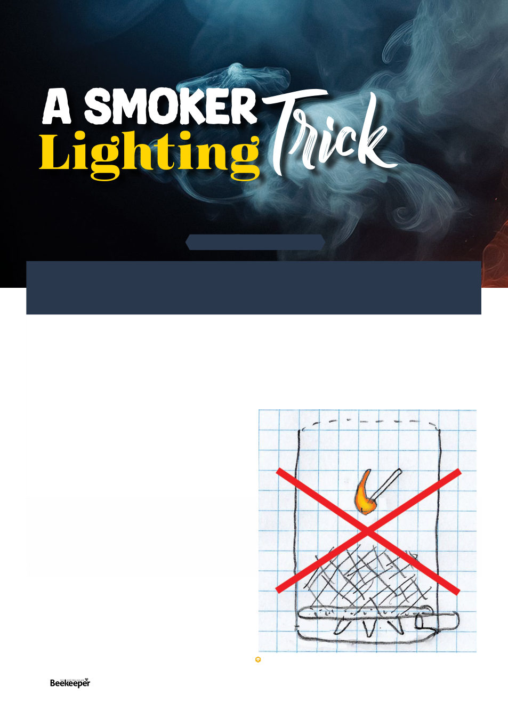

I don’t know if it was entirely a put-on considering the
damp leaves were never going to be very promising, but
having never used a cigarette lighter before I thoroughly
struggled to even get a flame out of it much less get the
smoker lit, as my employer shouted “I thought you said you
were a beekeeper!” from where he was already working
hives.
Then as we worked, gloveless which is normal, bees
started stinging the bajeezes out of my hands. On the basis
of this anecdotal evidence I have ever since suspected bees
can sense how you’re feeling – I was very stressed out and
it set them off, I suspect. But my qualifications already in
question I kept reaching in the hive doing my duty until
bossman finally exclaimed “you look like a pincushion put
some gloves on!”
The next day when my hands were swollen like lobster
claws he greeted me with “real beekeeper’s hands
don’tswell up like that.”Would a non-beekeeper quietly
work through receiving dozens and dozens of stings on
their hands without a peep about it? I grumbled to myself.
Anyway I was out of there about two weeks later.
So what’s the actual best way to light a smoker? How
would a “real” beekeeper do it?
Well first of all, keep some dry fuel on hand. It’s easy to
get in the habit of just gathering up pine needles from your
favorite place every morning, until you find there’s been a
heavy rain the night before and it’s all thoroughly damp.
Keep a stash in the garage/shed.
When I lived in mostly urban Orange County, California,
I had to actually buy hessian (“burlap”) at the hardware
store, it’s a good fuel if you lack access to freely available
fuel natural resources. Dry pine needles are a common go-
to, but tend to need to be tamped down and topped up
every five minutes. I like to start with pine needles and then
go to something that smoulders better, such as stringybark
bark, or nice dry cow or horse dung. The latter two things
actually smoulder really nicely and I get excited when I find
the perfect specimen of nice dry cow patty.
Next make sure your smoker is clean. Empty out the old
ashes. If your smoker has an anti-spark screen in the lid make
sure it’s clean. The table-like spacer at the bottom to keep
the fuel from obstructing the bottom air intake will often fall
ARTICLE BY KRIS FRICKE
Early one morning 2012, shortly after I’d first arrived in Australia, it was my first
day of work for a beekeeper, and he handed me a smoker, some damp leaves,
and a bic cigarette lighter.
Do not put the fuel in first and then try to light the top of it.
44 |
Celebrating 125 years | Vol. 126 | No. 06